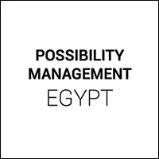
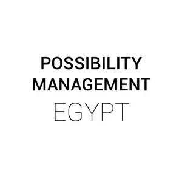
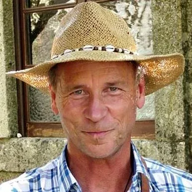

- POSSIBILITY- MANAGEMENT- # EGYPT
- INVITATIONOur offer is to bring- Possibility Managementwith its- Tools,- Distinctions,- Thoughtware,- Meeting Technologies,- Healingand- Transformation processesto you, the English and Arabic-speaking- Edgeworkersof Egypt.By updating what you use for thinking, and by learning the skills of intimate- five-bodynavigation, you transform almost anything that gets in the way of living the life you want to live.If you are interested in this Possibility, please contact us!
-
What is Possibility Management?- Possibility Management is - upgraded thoughtwarefor catalyzing change in the physical, intellectual, emotional or energetic obstacles blocking you and your team from using non-obvious possibilities.- It works by converting inner barriers into fertilizer, doorways, rocket ships, or avoidable mud puddles along your - path of evolution.
- Possibilities - Rage ClubThe purpose of Rage Club is to- change your relationship to the feeling of angerso that anger is consciously available to you as an adult whenever you need it, without being possessed or overwhelmed by it.In modern culture we are deeply conditioned to believe that it is not okay to be angry because “- anger is one of the negative feelings,” and “- anger is dangerous, loud, embarrassing, uncivilized”. When you learn to own your anger and use it responsibly, you get clarity and can act, protect yourself and avoid creating- victim-drama-stories.Rage Clubs are an extremely safe learning environment allowing you to- reconnect to the adult and archetypal power and intelligence of your anger. - Expand The Box TrainingExpand The Box is a paradigm shift. It’s a training where you- reinvent who you are,where you learn things you were not taught in school.Expand the Box is the core training for Possibility Management: a safe and astonishing 3-5 day learning environment for- upgrading traditional thinkingand behaviors.- Expand The Box is a - safe learning environmentwhere you work as a team to enter new territory and discover hidden fields of human possibility. The key to these discoveries lies in the extraordinary thoughtmaps, tools, techniques and processes of Possibility Management.- We train individually, in pairs, in small groups and as a whole group. Learning occurs through practicing new forms of experiencing and creating in the safest of conditions, where you can make - maximum mistakes with only positive consequences. - Possibility LabsCompleting Expand The Box qualifies you to attend a Possibility Lab: a 3-5 day training to be- fully empowered as a skilled change-agent, less in theory and more in practice.In Possibility Labs your personality Box expands with adulthood initiatory processes, novel soft skills, radical responsibility and stellated archetypes,- connecting you to the inner resourcesthat launch you into a meaningful and adult life.
- Egypt Team - ### Nada Elissawww.nadaelissa.com
- Who is behind Possibility Management?

- Clinton Callahan - http://clintoncallahan.org - Originator of - Possibility Management, author of- Radiant Joy Brilliant Love- Building Love That Lasts),- Directing the Power of Conscious Feelings- Goodnight Feelings- numerous articles.- Clinton provides transformational - 5-body- healingand- thoughtwareupgrade services for groups and individuals through trainings, talks, workshops, and (personal or online)- Possibility Coachingsessions. - Anne-Chloé Destremau - http://annechloedestremau.org - Possibility Management Trainer taking a stand for the evolution of consciousness in the world, opening doorways for who wants to step into Next Culture. - Gameworld (archived — not captured)Consultant- Possibility Management Trainer& Possibility Management Trainer-Trainer- Originator of the Possibility Management - Trainer Path Co-originator of the- StartOver.xyzGame & TEDx Speaker - "Pablo Picasso- Everything you can imagine is real."
-
Calendar & Contact- #### All trainings and events will be listed at the Possibility Management official- CALENDAR. Please write to us below with questions, or to inquire about the 'Bridge House' opportunity.
- NOTE:This website is a- Bubble in the Bubble Map- StartOver.xyz- doorway- experiments- upgrade your thoughtware- point of origin- create- possibility- knowledge- about. Your- thoughtware- with. When you- change your thoughtware- liquid state- reorganizes- feelings- emotions- upgrading your thoughtware- build matrix- consciousness (archived — not captured)- low drama- reactivity- collectively build- responsibly- PMEGYPTx.00to log your Matrix Point for reading this website on- StartOver.xyz